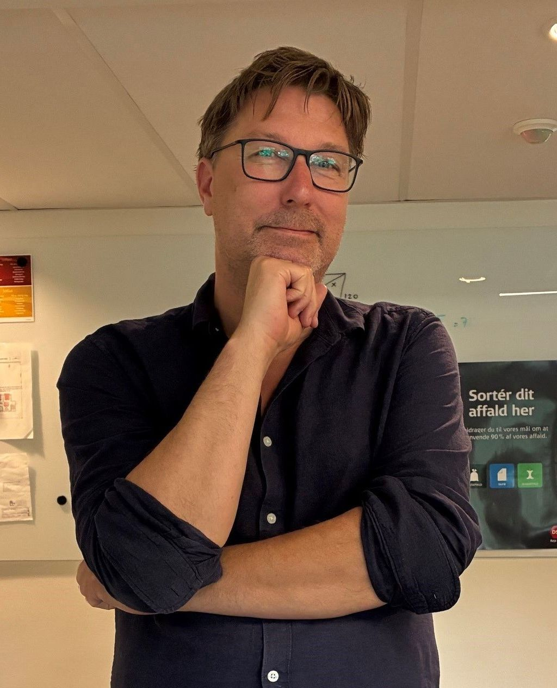

Principal IT Architect with a passion for building developer platforms that just work.
I believe great software is built by small, trusted teams using the right tools — with observability, security and quality built in from the start.
Copenhagen, Capital Region of Denmark
+20 years in IT architecture and software engineering
I am Principal IT Architect at DSB, the Danish State Railways, where I have spent more than 8 years shaping how the organization builds and runs software. My focus is on platform engineering, cloud-native architecture and the human side of delivering reliable IT — small, trusted teams with shared goals, high mutual trust and direct communication.
For nearly eight years I was part of the DSB Systems team, where we built MAX — DSB's internal developer platform centered around GitHub, Kubernetes, FluxCD and the Grafana observability stack, glued together with a lot of Python. The platform got new projects up and running in minutes, with observability, security, code quality and micro-service architecture built into the box. Today I am building a new platform for train maintenance.
Before DSB I worked across the Danish public sector and financial industry — as Systemarkitekt at Alka Forsikring, Chefkonsulent at Skatteministeriet, and Senior Applikationsarkitekt at Nykredit, where I developed the Swipp mobile payment solution.
Core capabilities and experiences
Platform Engineering
Designing and operating internal developer platforms on Kubernetes (AKS), with GitOps via FluxCD, Grafana observability and CI/CD baked in by default.
Cloud-Native Architecture
Micro-service architecture, event-driven design and pragmatic use of managed cloud services to keep operations simple and cost predictable.
Observability & Reliability
Building observability stacks that help engineers find and fix issues fast — without drowning teams in noise or replacing good code with expensive telemetry.
Software Development
Hands-on architect who reads and writes code. Python, infrastructure-as-code and the glue that ties developer experience together.
Solution Architecture
Enterprise-level system design across the Danish public sector and financial industry — from mobile payments to tax administration and insurance.
Team & Delivery
Small dedicated teams, shared goals, mutual trust and close collaboration with stakeholders. People and culture as the real path to delivering value.
Experience
-
May 2025 – Present
Principal IT Architect
DSB · Full-time
Building a new platform for train maintenance.
-
Jun 2023 – May 2025
Principal IT Business Consultant
DSB · Full-time · Denmark
-
Apr 2018 – May 2023
Senior IT Business Consultant
DSB
Co-built the DSB MAX developer platform on Kubernetes, FluxCD, Grafana and Python.
-
Aug 2016 – Mar 2018
Systemarkitekt
Alka Forsikring
-
Mar 2015 – Jul 2016
Chefkonsulent
Skatteministeriet
-
Dec 2010 – Feb 2015
Senior Applikationsarkitekt
Nykredit
Developed Nykredit's Swipp mobile payment solution.
-
Sep 2008 – Nov 2010
Løsningsarkitekt
DSB
-
Mar 2006 – Sep 2008
Specialkonsulent
DSB
Education
Cand. Scient., Datalogi — Datalogisk Institut, Københavns Universitet (1992 – 2001)
Sidefag, Dansk — Institut for Nordisk Filologi, Københavns Universitet (1993 – 1999)
Volunteering
Formand, bestyrelse — Sct Nicolai Skole (2018 – 2023). Skolebestyrelsesarbejde i samarbejde med kommunens øvrige skolebestyrelser.
Bestyrelsesmedlem — Skolen Bifrost (2023 – 2025). Friskole med fokus på trivsel for højtbegavede børn.